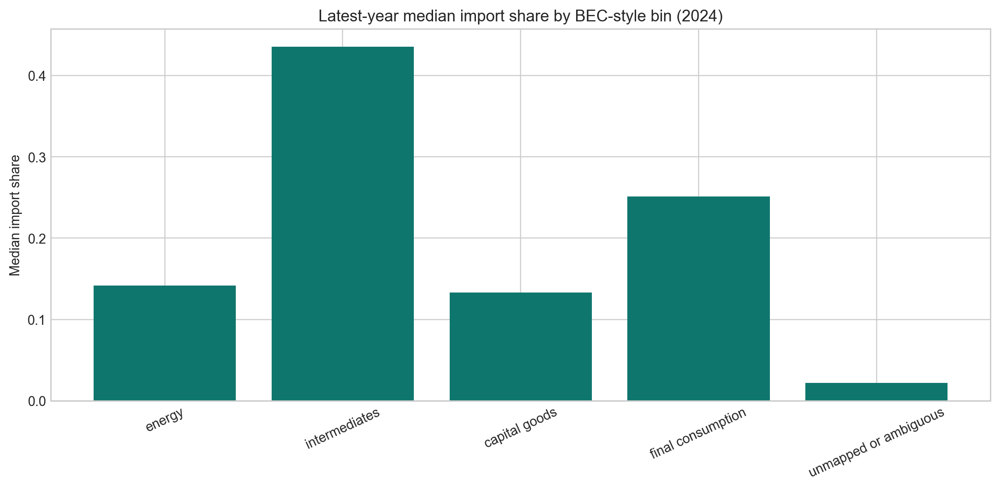
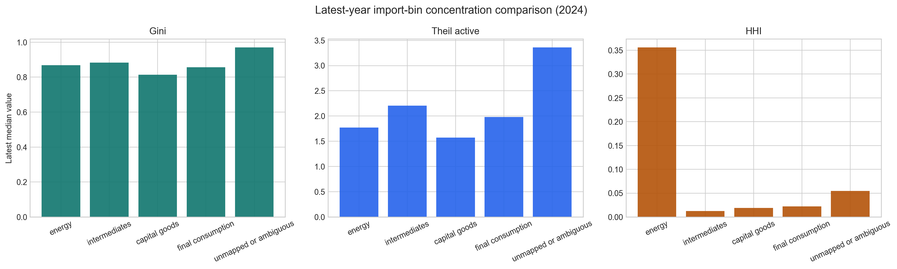
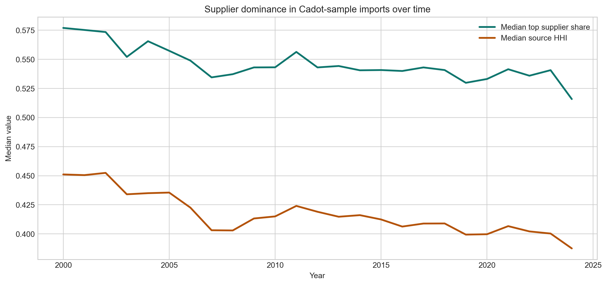
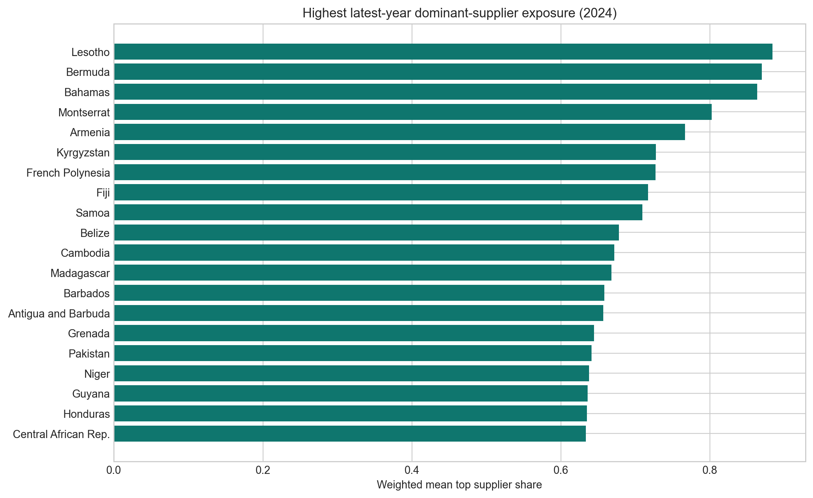
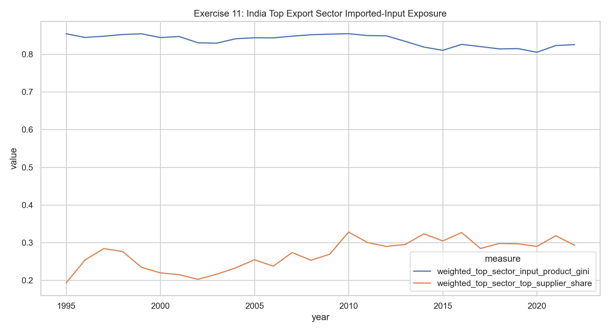
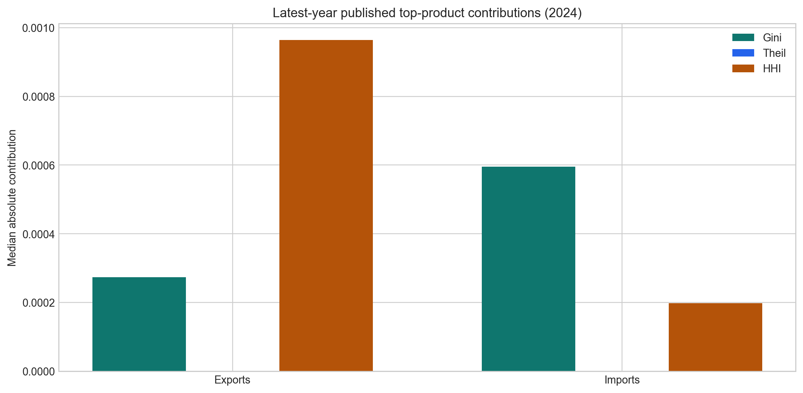
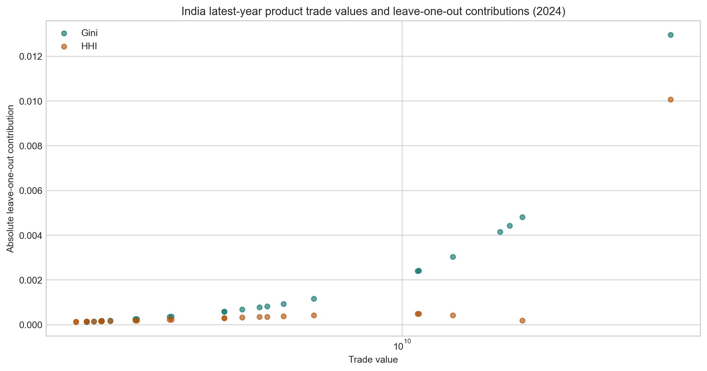

Energy, Intermediates, Suppliers, and Input-Output Linkages
The import exercises split the aggregate fact into components. The story is not one mechanism; energy is sharply concentrated, intermediates are large, and supplier concentration matters in narrower product channels.
What to Notice
- Energy has the sharpest within-bin concentration: median bin Gini 0.884, median top-1 share 54.0%.
- Intermediates are the largest import bucket: median import value share 47.7%.
- Across importer-years, the median product top-supplier share is 50.2%.
- Products with top supplier share at least 75% are 21.8% of product rows but 11.2% of import value.
Exercise 3: Import Bins
Energy has the strongest within-bin concentration and a positive leave-one-bin-out contribution. Intermediates matter more by scale.
| Import bin | Median bin Gini | Median top-1 share | Median value share | Leave-one-out Gini effect | Active HS6 products |
|---|---|---|---|---|---|
| Capital goods | 0.801 | 8.9% | 13.5% | -0.007 | 599 |
| Energy | 0.884 | 54.0% | 9.4% | 0.012 | 27 |
| Final consumption | 0.823 | 10.2% | 23.0% | -0.007 | 1,199 |
| Intermediates | 0.848 | 5.0% | 47.7% | -0.004 | 2,984 |
| Unmapped or ambiguous | 0.848 | 40.1% | 4.7% | 0.001 | 111 |


Exercise 4: Dominant Suppliers
For India in 2024, top-supplier share is at least 75% in 31.7% of imported HS6 rows, accounting for 13.0% of import value.


Exercise 11: Export-Linked Imported Inputs
Top export sectors have concentrated imported-input baskets, but the linkage is descriptive. The median top-sector input product Gini is 0.762. India's latest matched ICIO year is 2022, with weighted top-sector input product Gini 0.826 and matched requirement share 7.6%.
Interpretation: the broad story that all concentration-driving imports are export-linked intermediates is weak. A narrower channel through supplier-concentrated intermediate and electronics inputs remains more plausible.
| Model | Outcome | Term | Coef. | p-value | Clusters | Within R2 |
|---|---|---|---|---|---|---|
| product_export_value_gini | asinh_export_value | loo_gini_contribution_z | -4.926 | 0.000 | 33 | 0.154 |
| product_export_value_gini | asinh_export_value | import_value_share_z | 5.131 | 0.000 | 33 | 0.154 |
| product_export_value_partner_hhi | asinh_export_value | loo_partner_hhi_contribution_z | 0.224 | 0.004 | 33 | 0.034 |
| product_export_value_partner_hhi | asinh_export_value | import_value_share_z | 0.580 | 0.000 | 33 | 0.034 |


